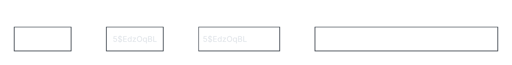

|
Calcula el hash MD5 de un fichero. |
|
Calcula el hash SHA1 de un fichero. |
|
Calcula el hash SHA256 de un fichero. |
|
Calcula el hash SHA384 de un fichero. |
|
Calcula el hash SHA512 de un fichero. |
|
Calcula el hash SHA3 de 256 bits de un fichero. |
|
Calcula el hash SHA3 de 512 bits de un fichero. |
El salted hashing es un método para almacenar contraseñas de forma segura añadiendo un valor llamado salt (un texto aleatorio único). Su objetivo es evitar ataques por tablas precalculadas (rainbow tables) y asegurar que dos contraseñas idénticas generen hashes completamente diferentes. Esquema:

Con el comando openssh passwd se pueden generar distintos tipos de HASH para contraseñas:
|
Calcula el hash MD5 de la contraseña. No se debe utilizar al ser poco seguro. |
|
Calcula el hash SHA256 de la contraseña. Es el método que se recomienda utilizar como mínimo. |
|
Calcula el hash SHA512 de la contraseña. Es muy seguro, pero requiere un mayor tiempo de computación. |
Cada comando devolverá un hash en el siguiente formato:
$[Número_método]$[Salt_utilizado]$[Hash_resultado]
"Número_método" indica el tipo de hash a utilizar como, por ejemplo: $1 - MD5; $5 - SHA256; $6 - SHA512.
Ya que "Salt_utilizado" es aleatorio, si se calcula el hash de la misma contraseña dos veces no se conseguirá el mismo resultado.
Para configurar manualmente el Salt hay que usar el parámetro -salt:
openssh passwd -[Número_método] -salt [Salt_a_utilizar] [Contraseña]
En este caso si se ejecuta el mismo comando 2 veces si se obtendrá el mismo hash ya que el Salt será el mismo.
Es conveniente no utilizar este parámetro ya que es conveniente que sea aleatorio por seguridad.
Con el comando john (John the Ripper) se puede detectar mediante un diccionario de contraseñas, cual corresponde a cada hash y así averiguar la contraseña correspondiente de cada usuario:
john --wordlist=[Ruta_lista_contraseñas] [Ruta_hash_contraseñas]--wordlist debe apuntar a un fichero con varias contraseñas separadas por saltos de líneas como, por ejemplo:
contraseña1
contraseña2
...Puedes obtener un fichero con 14,34 millones de contraseñas en el siguiente enlace: rockyou.txt.
"Ruta_hash_contraseñas" puede tener el siguiente formato:
[Nombre_usuario]:$[Número_método]$[Salt_utilizado]$[Hash_resultado]
...Nota: Se puede detener el escaneo con CTRL + C y reanudarlo en el mismo punto ejecutando el comando de nuevo.
Tras realizar el escaneo de contraseñas con john, se puede usar el parámetro --show para volver a ver el resultado:
john --show [Ruta_hash_contraseñas]Tras realizar un mismo escaneo 2 veces, la segunda vez solo enseñará el resultado de la primera vez, ya que el resultado se guarda localmente en la carpeta ~/.john. Puedes eliminar esta carpeta para volver a realizar el escaneo.